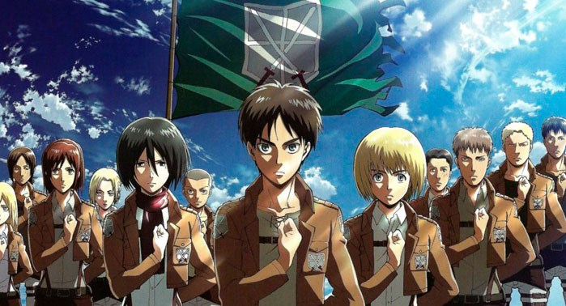

Shingeki no Kyojin (進撃の巨人 Lit. "Titán de Ataque"?), también conocida en países de habla hispana como Ataque a los titanes1 y Ataque de los titanes,2 es una serie de manga escrita e ilustrada por Hajime Isayama. El manga se publicó por primera vez en septiembre de 2009 en la revista Bessatsu Shōnen Magazine, de la editorial japonesa Kōdansha, y cada capítulo se publica de forma mensual, contaba con 135 capítulos hasta diciembre de 2020. En España, el manga es distribuido por Norma Editorial; en México y parte de Hispanoamérica por la editorial Panini, y en Argentina por la editorial Ovni Press .
Shingeki No Kyojin cuenta con cuatro temporadas, la primera de ellas emitida en 2013 con un total de 34 capítulos. La primera temporada del manga cuenta con 25 capítulos. Aunque la acogida de la serie fue bastante amplia en el mundo asiático, fue su entrada al mundo occidental la que detonó la serie a niveles Titánicos.
Un tiempo, antes, las personas fueron relativamente eliminadas por los titanes. Los jóvenes son increíblemente altos, parecen no tener idea, se comen a la gente y, para colmo, obviamente lo hacen por alegría en lugar de nutrirse. Un pequeño nivel de la humanidad hizo debido a encerrarse en una ciudad asegurada por divisores altos, considerablemente más altos que los titanes